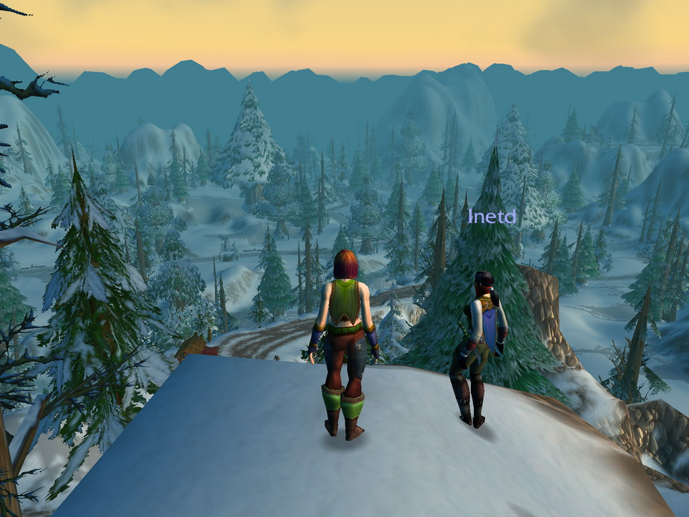
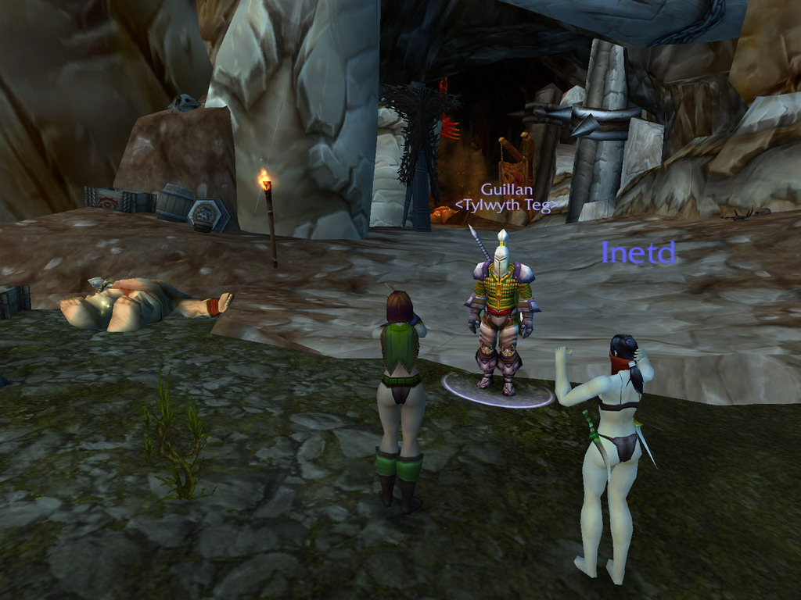
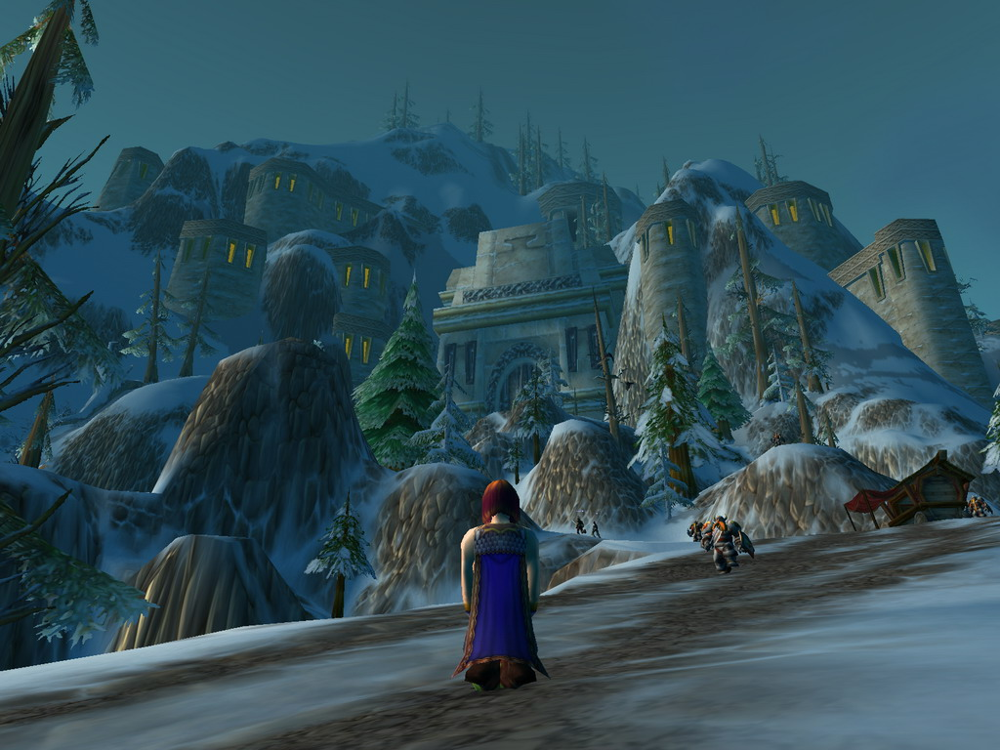
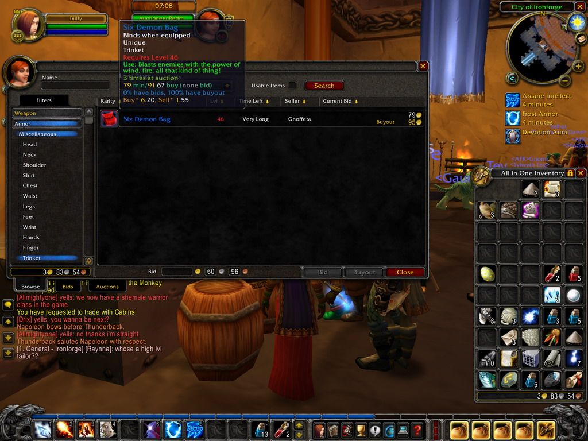
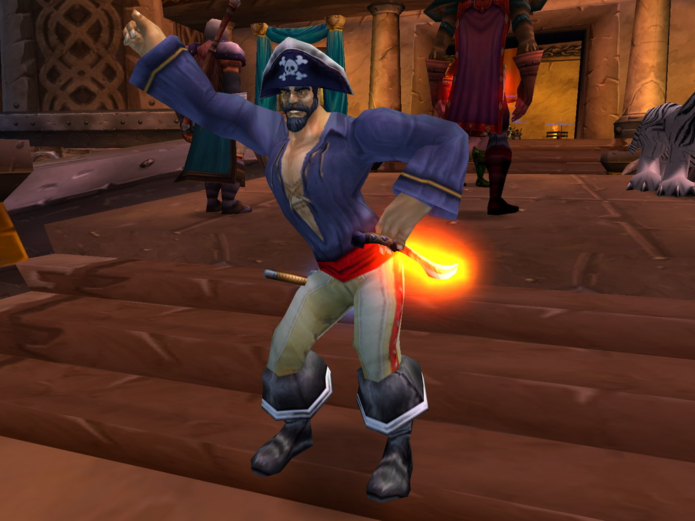
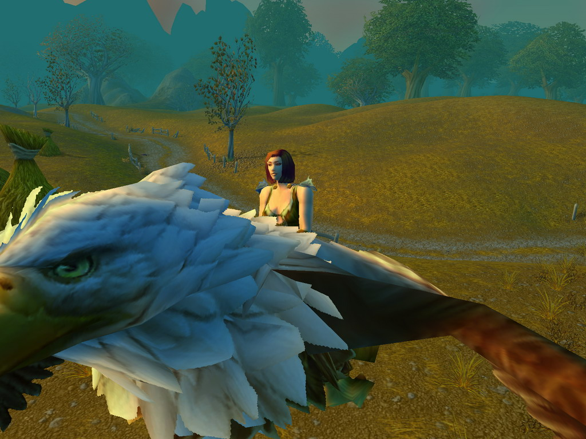
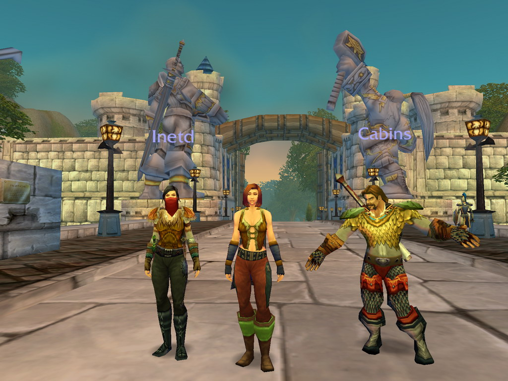
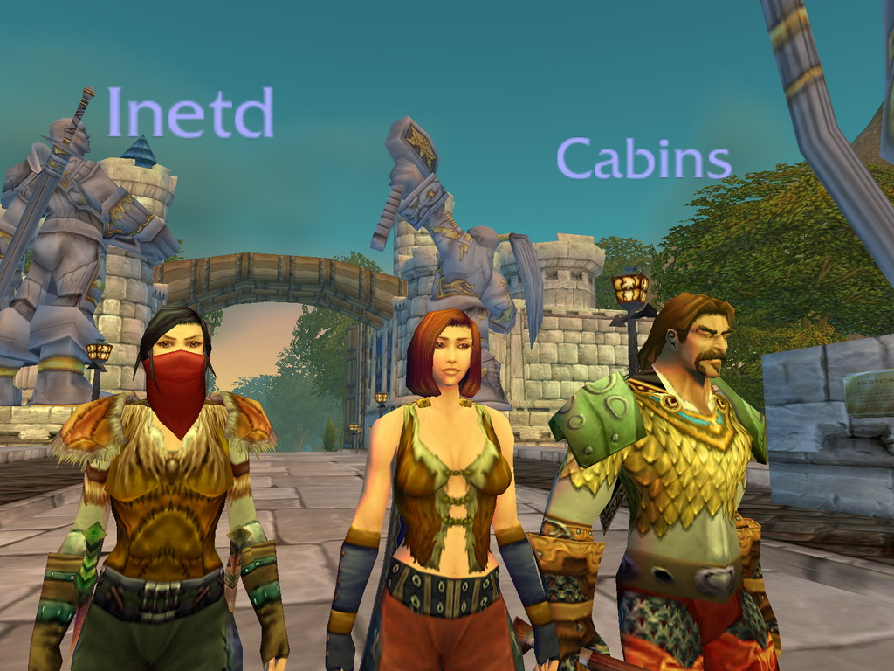
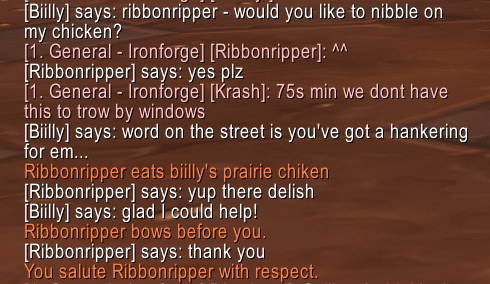
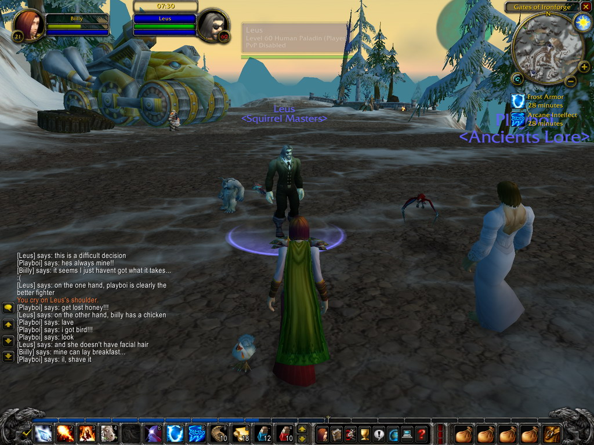

Purty...
| World of Warcraft screenies! The game ran like silk - tres impressive. Note: these have been resized from 1600x1200 and use 0*AA and 4*AF (perf). |
| Inetd and I (yes, I'm the chick on the left) looking out over the valley outside Ironforge. Viewdistance++!  |
Cabins and I watch as Inetd does a spot of fishing. Surprisingly he caught some Longjaw Mud Snapper. Again.

|
| This nice chap helped us kill an Ogre (lying to the left), so Inetd and I gave him a *special* dance.  |
| Another scenic shot, this time looking up at Ironforge as Cabins and Inetd race to the top. I forgot who won.  |
| If only Egg Shen knew about the auction house, he could have saved a lot of time and effort - only 95 gold!  |
| Would any game be complete without a dancing pirate? I think not! Here a player struts his stuff for me.  |
Who said disco was dead?

|
| Why walk when you can take a Griffin?  |
| Here we are at the gates of Stormwind. It should be noted that World of Warcraft's JiggleTech (tm) engine is fairly primitive when compared to the likes of Soul Calibur II on the XBox...  |
| There's always someone that blinks at just the wrong moment!  |
| A conversation between Ribbonripper and myself. A few minutes earlier Ribbonripper asked Cabins if he could eat his chicken. Ribbonripper didnt find it the least bit stange that I came in out of the blue and offered up my chicken to him.  |
| Here a bearded man in a wedding dress and I battle for the affection of a pirate in a tuxedo.  |